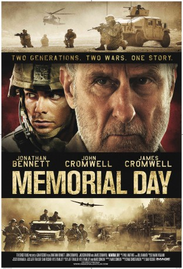

#8452 Memorial Day
Alternativ: War Nation (Originaltitel)
 
 IMDB-Wertung: 6.1 / 10
IMDB-Wertung: 6.1 / 10  Metascore: 0
Metascore: 0 
Memorial Day, 1993. When 13-year-old Kyle Vogel discovers the World War II footlocker belonging to his grandfather, Bud, everyone tells Kyle to put it back. Luckily, he ignores them. Although Bud has never talked about the war, he finds himself striking a deal with his grandson: Kyle can pick any three souvenirs, and Bud will tell him the stories behind each one. Memorial Day not only takes us on a journey into Bud's complicated wartime past, but also into Kyle's wartime future. As the two men share parallel experiences in combat, they come to realize how that magical day on the porch shaped both of their lives.
Jahr: 2012
Dauer: 113 Minuten
FSK: 16
Land: USA Studio: Image EntertainmentTonspuren: DTS - ,
Untertitel: Deutsch,
Auflösung: 1080p (1920x1080) Größe: 6912 MB
Genre: Action, Drama, Krieg, Geschichte
Regisseur: Samuel Fischer
Drehbuch: Jeff Traxler
Soundtrack: Paul Hartwig
Darsteller:
 Jonathan Bennett als SSgt. Kyle Vogel
Jonathan Bennett als SSgt. Kyle Vogel James Cromwell als Bud Vogel
James Cromwell als Bud Vogel- John Cromwell als Lt. Bud Vogel
- Jackson Bond als Young Kyle Vogel
- Emily Fradenburgh als Lt Kelly Tripp
- Charles Hubbell als Capt. Tom Marshall
- Steven Luke als Brandt
- Jasper Morgan als Young German Soldier
- Aaron Courteau als Frankie Califano
- Fredrika Dukes als Pfc. Tyson
- Eric Pierson als Insurgent #2
- Luis John Soria als Iraqi Civilian #31
 Punnavith Koy als (uncredited)
Punnavith Koy als (uncredited)- Casey Sill als Radioman (uncredited)
- Mary Kay Fortier-Spalding als Betty Vogel
- Corby Kelly als Derek Lodermeier
- Chris LeFevere als Spc. Josh Berg
- Reed Sigmund als Ed Gorski
- Thomas Sellwood als Pfc. Nick Sullivan
- Erin Traxler als Sarah Vogel
- Armin Zadeh als Moises Aguilar
- Max Gonzales als Zack Vogel
- Rick Fryklund als Donnelly
- Scott Eiden als Pfc. Travis Shane
- Olivia Coon als Ruthy Vogel
- Noah Coon als James Vogel
- Craig Christiansen als Ron Vogel
- Savvy Anavkar als Insurgent #1
- Ansa Akyea als Col. Glenn Larson
- Mathew Denn als SS Driver
- Sean Dooley als Sgt Jack O'Hara
- John Paul Echert als Father Echert
- Ethan Fagen als Justin
- Brady Harrison als Fischer
- Travis Jacobsen als SS Officer
- Aaron Preusse als Martel
- Abhinav Saihgal als Iraqi Civilian #1
- Jatin Setia als Interpreter
- Joshua Courteau als (uncredited)
- Joel Edwards als Lt. Col. John Winkler (uncredited)
- Adam Simon als German Medic (uncredited)
Datei: X:\2012(G-M)\Memorial Day (2012, FSK16, 1920x1080).mkv seit 06.03.2018
Festplatte: HD 2012(A-M)
 Es gibt insgesamt 112 Filme in der Gruppe '2012(G-M)'
Es gibt insgesamt 112 Filme in der Gruppe '2012(G-M)'